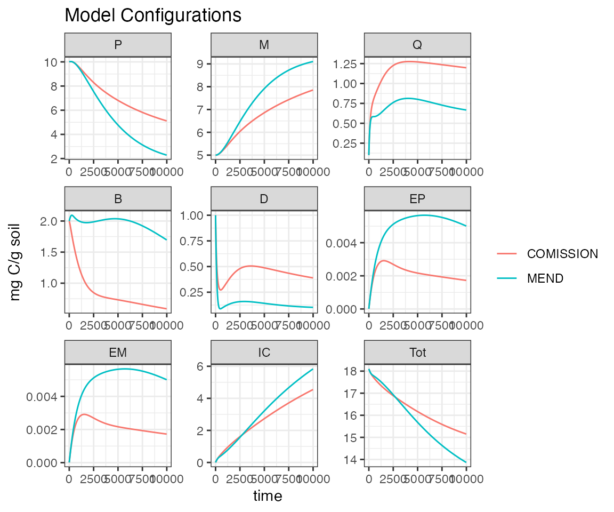

Compare_Model_Configurations.Rmd
library(MEMC) # MEMC should already be installed, see installation instructions.
library(ggplot2) # package used to visualize results
library(knitr) # makes nice tables
library(magrittr) # import the %>% pipeline
theme_set(theme_bw()) # set a theme to use in all the plotsIn this example we will compare default model configurations included with the package MEND_model and COMISSION_model.
time <- seq(from = 1, to = 1e4, by = 10)
mend_out <- solve_model(MEND_model, time = time, params = default_params, state = default_inital)
comiss_out <- solve_model(COMISSION_model, time = time, params = default_params, state = default_inital)
out <- rbind(mend_out, comiss_out)Visualize the outputs.
out %>%
ggplot(aes(time, value, color = name)) +
geom_line() +
facet_wrap("variable", scales = "free") +
labs(title = "Model Configurations", y = unique(out$units)) +
facet_wrap("variable", scales = "free") +
theme(legend.title = element_blank())
How do the different model configurations compare with one another? Take a look at the model configuration tables, this will tell us what kinetics model was used where.
MEND_model$config| Model | POMdecomp |
|---|---|
| MEND | MM |
COMISSION_model$config| Model | POMdecomp |
|---|---|
| COMISSION | RMM |